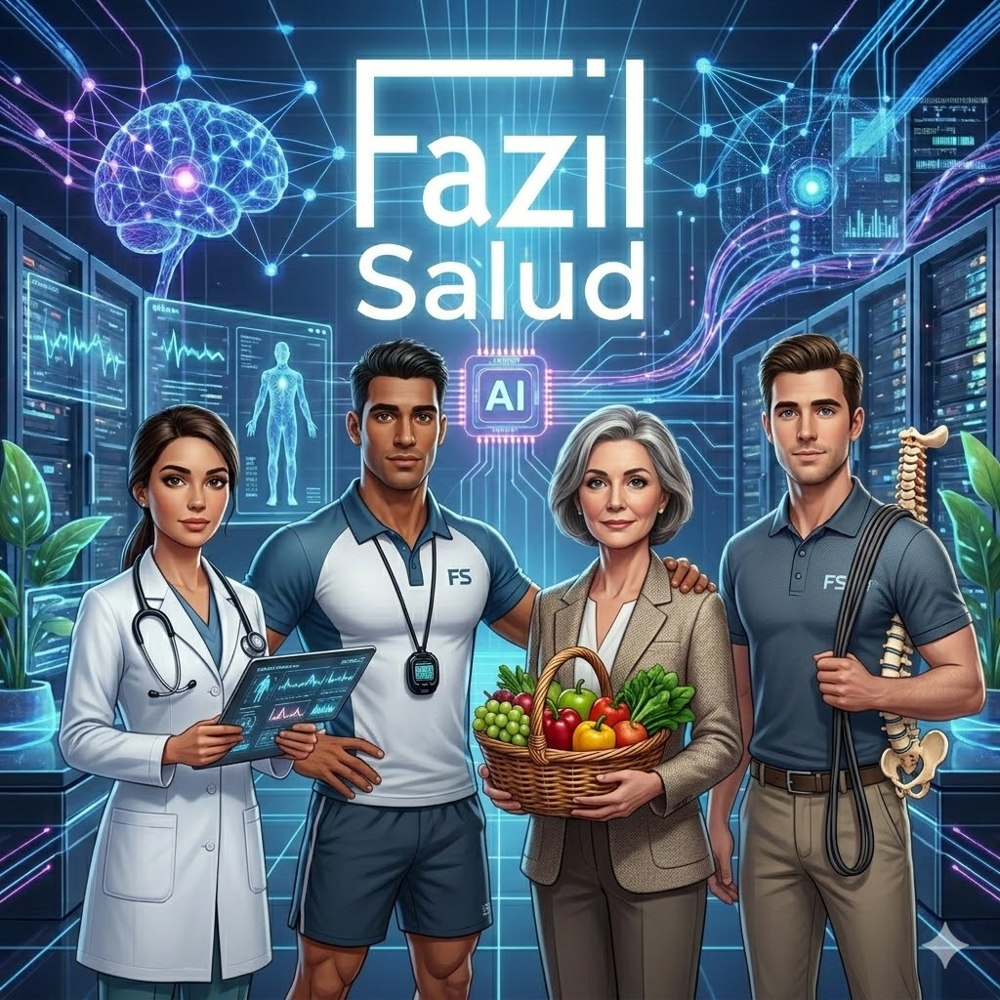

Context Engineer at Siemens (Global). I transform business objectives into scalable and reliable architectures that generate real ROI through the strategic use of AI.
Technical profile with over 15 years of experience. My career began with 10 years as a Simulation and Digital Twins Specialist Engineer, where I gained experience in highly complex sectors such as Aerospace, Railway, and Automotive.
My evolution towards the client was consolidated as a Pre-Sales Lead (5 years), translating technical digitalization challenges into business value solutions.
Currently, as a member of the European AI Adoption Group (EMEA), I focus on Context Engineering and the integration of AI into corporate processes. I have materialized this knowledge in Fazil, a tool designed to solve context problems, avoid hallucinations, and optimize tokens through high-fidelity RAG architectures.
Who wouldn't want to have a team of healthcare workers to take care of them? A doctor, nutritionist, trainer, physiotherapist... each an expert in their discipline, with the right context to give you the best response, and always coordinated with each other to offer you a holistic response that improves your quality of life.
Demonstrate the construction of a general-interest AI architecture applied to critical health management.
Secure ingestion from Garmin and medical PDFs into GCS/Firestore.
Hybrid RAG over scientific papers and private clinical history.
Committee of experts (Doctor, Nutritionist, Coach) with segregated roles.
Technical validation of physiological metrics (VLaMax/VO2Max) without hallucinations.
Decoupled architecture ready for BigQuery Vector Search.

AI Feasibility evaluation and discovery of corporate use cases with real ROI.
Design of RAG architectures and secure, scalable multi-model orchestration (Gemini, Llama).
Ingestion and data cleaning pipelines in BigQuery to feed models without hallucinations.
Mastery of LangChain and the Vertex AI SDK to build fluid user experiences.
Implementation of Responsible AI with Vertex Safety Filters to shield critical environments.
Lifecycle management, hallucination monitoring, and continuous deployment in GCP.
Design of RAG architectures, Autonomous Agents, and Context Engineering management.
Scalable implementation with Vector Search, BigQuery, and Reasoning Engines on Google Cloud.
MLOps, continuous hallucination evaluation (Rapid Eval), and business impact focus.